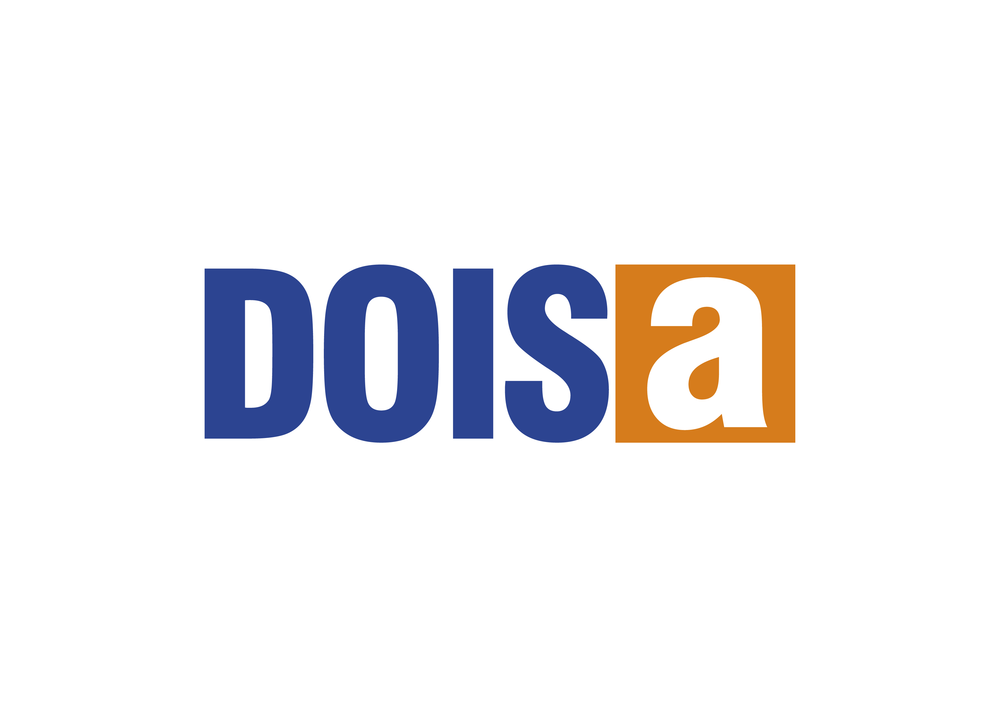

Formação interna · Dois A Incorporações
Aprendizados
com a MRV

SOBRE ESTE MATERIAL
O que é isto, e como ler
73 assuntos ouvidos em três conversas, organizados em 26 temas escolhidos e três blocos extras.
COMO ESTE MATERIAL NASCEU
Duas conversas com a MRV, uma visita a outra construtora
Em 17 e 18 de setembro de 2026, o Gustavo Pinheiro esteve em Fortaleza com um executivo regional da MRV — responsável pelo resultado operacional da regional junto com mais dois sócios, um de gestão imobiliária e outro comercial. Foram duas conversas: uma de escritório, sobre gente, dinheiro e processo, e uma visita a uma obra de 378 apartamentos.
No dia anterior, 17 de setembro, o grupo também visitou uma construtora local de Fortaleza que trabalha na faixa 1 do Minha Casa Minha Vida, empreitado com a Caixa. Essa visita não é da MRV — é uma conversa diferente, com gente diferente, sobre um negócio diferente (parede de concreto, faixa 1). Este material separa sempre as duas fontes.
As três conversas foram gravadas e transcritas por inteiro, palavra por palavra. Cada afirmação deste material foi conferida contra a gravação outra vez, minuto a minuto, antes de entrar aqui — e cada tela final do material traz uma tabela mostrando de qual gravação e de qual minuto cada fato saiu.
COMO LER
Cada assunto numa tela, em três blocos
Os 26 temas escolhidos para este material — mais três blocos que entraram por decisão do Gustavo — trazem sempre os mesmos três blocos na mesma tela: o que é, explicado sem jargão, à esquerda; o número ou o fato que prova que aquilo é real, e o que serve para a Dois A, à direita.
Ler este material não exige ter visto planilha de obra nem saber o que é RCCP — cada termo de gestão é explicado na primeira vez que aparece. É material para todo mundo, da diretoria a quem está na obra.
Um aviso vale para o material inteiro: a MRV é uma empresa muito maior que a Dois A, com regras e estrutura pensadas para essa escala. Nem tudo aqui cabe do jeito que está — cada bloco de "o que serve para a Dois A" já leva isso em conta.
GENTE
Como a MRV segura e motiva quem trabalha
Cinco decisões sobre premiação, benefícios e contratação.
GENTE · TEMA 1 DE 26
Uma premiação com três metas, paga a cada trimestre
Cada equipe de obra da MRV é medida em três coisas ao mesmo tempo: fechar o pavimento em menos de 100 dias, bater a meta de medição que gera caixa para a empresa e passar o semestre inteiro sem acidente com afastamento. As três batidas geram dinheiro extra, pago a cada trimestre, sem tirar nada do salário de ninguém.
O prêmio não fica só com o engenheiro. Ele é rateado entre quem participou de verdade do resultado: o engenheiro, o analista, o mestre, o almoxarife, o auxiliar responsável pelo fechamento do pavimento e o time de checklist.
Quem desenha esse programa não é a engenharia. Na MRV o RH é dividido em duas frentes: uma cuida de ponto, admissão e burocracia; a outra, o Desenvolvimento Humano, cuida de performance, retenção e premiação — e desenha os programas de meta, não a engenharia. A separação evita que o programa vire improviso de quem já está sobrecarregado tocando a obra no dia a dia.
O NÚMERO
Prazo do pavimento
< 100 dias
Valor por pavimento no prazo
R$ 2.000
Torre de 15 pavimentos
R$ 30.000
Meta de medição/caixa
R$ 500/mês
Zero acidente com afastamento
R$ 1.500/semestre
Parte do engenheiro/pavimento
R$ 600
Parte do analista/pavimento
R$ 400
Somadas as três metas, o engenheiro pode chegar a levar o equivalente a cinco salários extras no ano — e o dinheiro nunca abate o salário fixo, é sempre a mais.
PARA A DOIS A
- As três coisas certas já vêm medidas juntas: prazo, caixa e segurança — nenhuma delas sozinha, porque otimizar só uma distorce as outras duas.
- O rateio entre engenheiro, mestre, almoxarife e checklist não deixa ninguém de fora do resultado — inclusive quem não assina nada, mas sustenta o prazo no dia a dia.
- É o item de maior aplicação direta de todo o material: dá para adaptar ao tamanho da Dois A sem inventar nada, só ajustando os valores.
Fonte: áudio 1 (escritório MRV, 18/09), 00:00–00:04.
GENTE · TEMA 2 DE 26
Quem desenha a premiação não é a engenharia
O RH da MRV é dividido em dois times com nomes diferentes. Um cuida de ponto, admissão e processos de contratação — a parte burocrática. O outro, o Desenvolvimento Humano, cuida de performance, retenção e dos programas de premiação.
É o Desenvolvimento Humano quem desenha as metas e os prêmios — não o engenheiro nem o gestor de obra, que estão ocupados demais tocando produção para desenhar programa de incentivo com cuidado.
PARA A DOIS A
- Um programa de metas desenhado por quem também está correndo atrás de prazo tende a virar remendo — a separação evita isso, mesmo numa estrutura pequena como a nossa.
- Não precisa de um departamento novo: precisa de alguém com tempo dedicado a pensar o programa, fora da correria operacional do dia a dia.
Fonte: áudio 1, 00:03–00:04.
GENTE · TEMA 3 DE 26
Um pacote de benefícios pensado item por item
A MRV oferece um cartão de benefícios próprio, apoio para mãe de recém-nascido nos primeiros seis meses, folga semanal para quem tem filho com deficiência, plano de saúde dividido meio a meio entre empresa e colaborador (com a família incluída), previdência privada com aporte da empresa e desconto na compra de imóvel próprio, que cresce com o tempo de casa. Também entram dez consultas de psicólogo por ano e uma rede social interna. Nem todo item é para todo mundo — o plano de saúde integral, por exemplo, vale só para quem está na operação (o "capacete branco").
O NÚMERO
Apoio a mãe de recém-nascido
R$ 350/mês, 6 meses
Plano de saúde
50% empresa, 50% colaborador
Previdência privada (aporte MRV)
até 4%
Desconto em imóvel próprio
até 10%, cresce com o tempo
Psicólogo
10 consultas/ano
PARA A DOIS A
- Não é para copiar a lista inteira — é para escolher item por item o que pesa mais na hora de segurar gente boa, pelo custo que exige.
- Vários itens desse pacote custam pouco e têm efeito desproporcional em quem trabalha: folga para pai/mãe de filho com deficiência ou apoio a recém-nascido são exemplos de baixo custo e alto peso emocional.
Fonte: áudio 1, 00:04–00:08.
GENTE · TEMA 4 DE 26
Vaga interna antes de contratar fora, sempre
Nenhuma vaga da MRV, de nenhum setor, é preenchida sem antes abrir um processo interno. É por isso que todos os engenheiros da empresa foram formados dentro de casa — com uma média de oito anos de empresa cada um.
Quem não quer seguir carreira de obra também tem para onde ir: pode migrar de lado para incorporação ou para suprimentos, sem precisar sair da empresa para mudar de área.
PARA A DOIS A
- Não exige sistema nem processo complexo — só a regra de sempre abrir a vaga para dentro primeiro, antes de sair procurando fora.
- O próprio Gustavo comentou, na conversa, que é isso que quer levar para dentro da Dois A: dar a quem já está aqui a primeira chance em qualquer vaga nova.
Fonte: áudio 1, 00:53–00:54.
GENTE · TEMA 5 DE 26
Rotatividade medida, com as causas nomeadas
A MRV mede o giro de pessoal por semestre, separando operação (o "capacete amarelo") de administrativo (o "capacete branco"). E não atribui a rotatividade à sorte ou ao mercado — nomeia três causas concretas: falta de cuidado com a mão de obra, falta de frente de serviço liberada para trabalhar, e o profissional não conseguir ganhar dinheiro suficiente.
O NÚMERO
Rotatividade — operação
48% ao semestre
Rotatividade — administrativo
10% ao semestre
O próprio executivo da MRV diz que 48% já foi bem pior — o número existe para acompanhar melhora, não é um problema resolvido.
PARA A DOIS A
- Hoje ninguém na Dois A sabe esse número. Antes de copiar qualquer solução da MRV para rotatividade, o primeiro passo é simplesmente medir o giro que já existe.
- As três causas nomeadas pela MRV servem de roteiro de pergunta, não de diagnóstico pronto: vale checar se as mesmas três valem para a Dois A antes de agir em cima delas.
Fonte: áudio 1, tema geral citado de novo no áudio 2, 01:19–01:20.
ORGANIZAÇÃO DA OBRA
Como o trabalho da obra é organizado
Sete decisões sobre estrutura, papel e conferência.
ORGANIZAÇÃO · TEMA 6 DE 26
O escritório existe para servir a obra, não o contrário
A frase que resume a filosofia da casa na MRV é direta: "a obra é uma fábrica". Muitas empresas enxugam o escritório para carregar a obra nas costas; na MRV é o inverso — cada coisa que atrapalharia o engenheiro tem alguém no escritório fazendo por ele. O engenheiro de obra responde só por cinco coisas: obra, custo, medição, prazo e segurança. Tudo que não é isso — legalização, meio ambiente, trâmite, compra — vira trabalho de outra pessoa.
PARA A DOIS A
- Isso não é um item isolado — é a régua por trás de quase todos os outros temas deste capítulo: mestre geral, urbanização separada, despachante interno.
- Vale como pergunta de auditoria interna: hoje, quanto do tempo do engenheiro de obra da Dois A vai para coisa que não é obra, custo, medição, prazo ou segurança?
Fonte: áudio 1, 00:13–00:14 e 00:35–00:36; áudio 2, 00:42.
ORGANIZAÇÃO · TEMA 8 DE 26
Quem cuida do lado de fora do muro não é o engenheiro da obra
A incorporação entrega a obra já legalizada e com as condicionantes ambientais atendidas — não é o engenheiro de obra quem corre atrás disso. Drenagem, esgoto, pavimentação e ligação de energia ficam com um analista de urbanização dedicado, formado engenheiro, que cuida só do que está do muro para fora. Plantio de mudas e outras condicionantes ambientais ficam com outra pessoa ainda, especializada só nisso.
PARA A DOIS A
- É o trabalho que mais consome tempo de quem toca obra e menos tem a ver com o ofício dele — separar isso libera o engenheiro para o que só ele pode decidir.
- Não precisa ser uma pessoa de dedicação exclusiva desde o primeiro dia: pode começar como responsabilidade extra de alguém do time de incorporação.
Fonte: áudio 1, 00:37–00:43.
ORGANIZAÇÃO · TEMA 7 DE 26
O escritório regional, pessoa por pessoa
A retaguarda da MRV em Fortaleza tem função definida para cada papel: três pessoas só lançando nota fiscal, uma cuidando de consumo e estoque de material, uma cuidando de produtividade de mão de obra e alimentando os painéis, uma de obras fora do muro (urbanização), uma de meio ambiente e uma de trâmites em prefeitura.
PARA A DOIS A
- Dá para ler item por item e marcar três colunas: o que a Dois A já tem, o que falta e o que ainda não faz sentido no nosso tamanho — sem precisar copiar a estrutura inteira de uma vez.
- O ponto de partida mais barato costuma ser separar quem lança nota fiscal de quem cuida de produtividade: são dois trabalhos diferentes, hoje muitas vezes empilhados na mesma pessoa.
Retaguarda por função, não por hierarquia: seis funções fixas reportando ao escritório regional, mais o mestre geral, fora da hierarquia porque cuida só de obra.
Fonte: áudio 1, 00:13–00:15.
ORGANIZAÇÃO · TEMA 9 DE 26
Despachante interno em vez de terceirizado
Os trâmites em secretaria são feitos por um funcionário da própria casa, com procuração — não por um despachante terceirizado. A lógica deles: sai mais barato e é mais rápido, porque despachante terceirizado tem interesse em criar dificuldade para justificar o próprio serviço. O exemplo citado foi uma renovação de viabilidade de água: um despachante cobrava R$ 10 mil por esse trâmite, e o funcionário interno resolve com uma ida ao balcão.
PARA A DOIS A
- Não exige contratar ninguém novo de cara: dá para testar com um trâmite específico, medindo quanto custaria por despachante contra o custo de fazer internamente.
- Se funcionar num trâmite, o próximo passo natural é ampliar aos poucos.
Fonte: áudio 1, 00:37–00:43.
ORGANIZAÇÃO · TEMA 11 DE 26
O ritual de duas semanas por mês
Metade do mês, o gestor regional da MRV não sai do escritório: uma semana inteira só de reunião de custo, outra só de prazo e planejamento, passando linha a linha pelo orçamento de cada obra, sem hora marcada para acabar. Todo mundo na empresa sabe que, nessas duas semanas, ele não responde e-mail — e essa orientação vem de cima, da própria matriz da MRV, não é escolha pessoal dele.
PARA A DOIS A
- É o item que mais provoca discussão de todo o material — porque contraria diretamente o hábito de responder tudo em tempo real.
- Revisar orçamento linha a linha, com profundidade, exige tempo protegido, que não cabe entre uma reunião e outra.
Fonte: áudio 1, 00:31–00:32.
ORGANIZAÇÃO · TEMA 10 DE 26
O mestre geral: uma pessoa que não toca obra nenhuma
É um cargo por cidade — na MRV, com dez anos de casa —, que não fica responsável por nenhuma obra específica. O trabalho dele é dar a largada em cada serviço crítico: a fundação, a primeira parede, a paginação da primeira cerâmica. É ele quem cuida do sequenciamento das equipes entre as obras e indica o bom profissional para cada uma.
Depois de dar a largada, ele manda relatório com foto para o gestor, de forma que o gestor já chega na obra sabendo o que vai encontrar — sem precisar descobrir problema na hora.
O NÚMERO
Tempo de casa
10 anos
Obras sob responsabilidade direta
nenhuma
O que ele dá a largada
fundação · 1ª parede · 1ª cerâmica
Ele também cuida de gente: percebeu que um profissional morava longe demais da obra em que estava e o remanejou para uma obra perto de casa, trazendo outro profissional para o lugar dele.
PARA A DOIS A
- A Dois A não tem hoje uma função equivalente — cada obra depende só do próprio engenheiro para dar a largada certa nos serviços críticos, sem ninguém olhando o conjunto.
- Não precisa nascer como cargo dedicado: pode começar como responsabilidade extra do engenheiro mais experiente, cobrindo as obras que estão começando um serviço crítico ao mesmo tempo.
Fonte: áudio 2, 01:20–01:25.
ORGANIZAÇÃO · TEMA 12 DE 26
Conferência cruzada: quem confere não pode ter conversado antes
A locação de uma obra — o passo que define onde exatamente cada elemento vai ficar no terreno — é conferida por um engenheiro de outra obra, que não pode ter conversado com o engenheiro responsável antes de conferir.
A regra existe porque, se os dois conversarem antes, quem confere ouve como o outro fez e só confere por cima — em vez de checar de verdade, do zero.
PARA A DOIS A
- Não exige contratar ninguém nem mudar processo grande — só a regra de que quem confere a locação de uma obra não é quem também vai executá-la, e não conversa antes com quem fez.
- Erro de locação é dos mais caros de corrigir depois de a obra iniciada — uma conferência cruzada de custo zero é seguro barato contra esse risco específico.
Fonte: áudio 1, 00:32; áudio 2, 01:24.
DINHEIRO
Como medem e como decidem
Sete decisões sobre custo, terreno e qualidade.
DINHEIRO · TEMA 13 DE 26
Tudo é custo por unidade produzida, não custo por mês
A pergunta que se faz na MRV não é "quanto custou este mês" — é "quanto custa por apartamento". A frase usada foi literal: "esse piso custa R$ 50 por apartamento". Todo indicador de custo é lido por essa régua, não pelo calendário.
A meta de custo por unidade é R$ 100 mil, incluindo terreno e legalização. O desembolso real fica em R$ 130 mil — a diferença entre meta e realizado é o que aciona o processo de cortar item do projeto, descrito no tema do terreno reprovado.
Por trás do custo por unidade existem índices específicos — administrativo, materiais, equipamentos, instalador — que a MRV mede separadamente e depois soma na régua única de "custo por apartamento". É essa régua única que aparece em toda reunião de custo, não os índices soltos.
O NÚMERO
Meta de custo por unidade
R$ 100 mil
Desembolso real por unidade
R$ 130 mil
Exemplo citado
piso a R$ 50/apartamento
PARA A DOIS A
- "Quanto custou este mês" é pergunta de contador; "quanto custa por apartamento" é pergunta que engenheiro, mestre e almoxarife entendem do mesmo jeito, sem precisar saber ler a DRE — a planilha que mostra receita, custo e lucro de um período.
- Não depende de sistema novo: depende de escolher, para cada obra, o número de unidades que divide o custo total — e repetir essa régua em toda reunião de acompanhamento.
Fonte: áudio 1, 00:30–00:32; áudio 2, 00:31–00:33.
DINHEIRO · TEMA 14 DE 26
O rateio do escritório por unidade, e o efeito que ele provoca
Cada apartamento produzido na MRV carrega R$ 4.500 para bancar o escritório regional e a matriz. Como o salário desse escritório é fixo, produzir menos faz o custo por unidade subir na hora — é matemática simples, mas com efeito forte na prática.
O NÚMERO
Produzindo 1.700 unidades
R$ 4.500/unidade
Produzindo 1.500 unidades
R$ 5.600/unidade
A diferença bate direto no resultado de que os sócios vivem.
PARA A DOIS A
- O rateio, sozinho, já cria o incentivo certo: o próprio custo por unidade mostra o efeito de produzir menos.
- Vale simular esse cálculo com a estrutura de retaguarda que a Dois A já tem hoje.
Fonte: áudio 1, 00:46–00:51.
DINHEIRO · TEMA 15 DE 26
Terreno reprovado pelo custo, com um caminho de salvamento antes
Antes de comprar um terreno, a MRV faz sondagem com verba própria, dentro do próprio desembolso da negociação. A partir daí, a engenharia devolve o custo por unidade daquele terreno específico — e se o número vier acima da meta, começa um processo de corte: tira o que não mexe na tipologia (piscina, piso de área comum, textura no teto). Se ainda não fecha, o terreno é descartado, não entra forçado.
PARA A DOIS A
- É o tipo de processo que a Dois A está construindo agora para terreno — a sequência sondagem → custo por unidade → corte → descarte é um roteiro pronto para testar.
- O ponto mais transportável é a ordem: cortar acabamento antes de mexer na tipologia.
Fonte: áudio 1, 00:19–00:21; áudio 2, 00:31–00:33.
DINHEIRO · TEMA 16 DE 26
Como pagam o terreno
A preferência da MRV é permuta financeira, sempre que o dono do terreno aceita. Quando há desembolso em dinheiro, o pagamento se divide em três partes: sinal, alvará e velocidade de obra, nas proporções de 30%, 60% e 90%. Quando conseguem negociar, trocam a parcela ligada à velocidade de obra pela velocidade de venda — e aí o pagamento fica amarrado ao dinheiro que está entrando de verdade.
PARA A DOIS A
- A ideia de trocar o gatilho de pagamento — de velocidade de obra para velocidade de venda — é a que vale mais a pena levar para a negociação de terreno da Dois A.
- Não depende de estrutura nova: é cláusula de negociação, testável no próximo terreno.
Fonte: áudio 1, 00:35–00:36; áudio 2, 00:33–00:34.
DINHEIRO · TEMA 17 DE 26
O dono olha todos os terrenos, e tem gente pesquisando o futuro para ele
O dono da MRV visita pessoalmente cada regional a cada três meses e passa duas semanas rodando. Nenhum terreno é comprado sem ele ver antes. Além disso, existe uma área de estratégia dedicada só a alimentar essas decisões com notícia e leitura de economia — foi essa área que recomendou comprar mais quatro terrenos numa região do Ceará, antecipando um investimento grande de infraestrutura na região.
PARA A DOIS A
- A primeira parte — o dono vendo cada terreno pessoalmente — é escala que a MRV tem e a Dois A não precisa replicar do mesmo jeito.
- A segunda parte é o que interessa: montar, mesmo com pouca gente, uma rotina simples de acompanhar o que está mudando na cidade antes que vire concorrência pelo terreno.
Fonte: áudio 1, 00:26–00:27; áudio 2, 00:35–00:39.
DINHEIRO · TEMA 18 DE 26
A régua de decisão é a Selic
Para um terreno entrar, o resultado operacional mínimo exigido é 35%. E existe uma frase do dono da MRV que resume o critério final: se o resultado esperado for pior que a taxa Selic — a taxa básica de juros da economia, o retorno de referência de uma aplicação sem risco — a conta se fecha e o dinheiro fica guardado no banco, em vez de virar um empreendimento com risco maior que aplicação sem risco.
O NÚMERO
Resultado operacional mínimo
35%
Critério final
acima da Selic, sempre
PARA A DOIS A
- Comparar o resultado esperado com a Selic do momento da decisão é uma régua simples, pública, que qualquer pessoa da equipe consegue verificar sozinha.
- Não substitui a viabilidade completa — funciona como primeiro filtro.
Fonte: áudio 2, 00:35–00:40.
DINHEIRO · TEMA 19 DE 26
O custo da não qualidade, medido em separado
A MRV mede quanto custa o retrabalho que passou pela engenharia, pelo checklist e pela assistência técnica — e ainda assim o cliente apontou depois. Não existe verba de retrabalho prevista no orçamento deles: o que acontece é medido e cobrado como desvio. Na própria conversa, do lado da Dois A, esse número já foi dito: cerca de 5% da mão de obra e R$ 300 por apartamento, puxado sobretudo por personalização.
PARA A DOIS A
- A Dois A já sabe o tamanho do problema — o que falta é transformar esse número solto num indicador acompanhado mês a mês, com dono definido.
- Hoje esse número fica diluído no custo geral da obra. Separado, como a MRV faz, dá para comparar mês a mês se está subindo ou caindo.
Fonte: áudio 2, 01:04–01:06.
COMPRAR, CONTRATAR E PAGAR
Como o dinheiro sai da empresa
Cinco decisões sobre nota fiscal, compra e mão de obra terceirizada.
COMPRAR · TEMA 20 DE 26
A central de notas e o fluxo novo
No modelo antigo, o fornecedor entregava a nota fiscal em papel. Três pessoas lançavam essa nota manualmente no sistema, e o papel ia para reciclagem depois — com um risco constante de nota extraviada no meio do processo.
No modelo novo, quem lança a própria nota é o fornecedor. O almoxarife só confirma que o material chegou de verdade, e o engenheiro libera o pagamento — duas alçadas, e acabou a categoria "nota perdida". Cada fornecedor ainda ganhou um portal para consultar o próprio pagamento, em vez de precisar ligar para o engenheiro toda vez.
PARA A DOIS A
- A lógica das duas confirmações — almoxarife confirma recebimento, engenheiro libera pagamento — é copiável sem sistema sofisticado, mesmo numa planilha compartilhada.
- O portal de consulta para fornecedor é o passo mais avançado da MRV — não precisa vir junto no primeiro momento; o ganho principal já está em tirar o lançamento manual do meio.
De três lançamentos manuais para duas confirmações — o ganho é inverter quem digita a nota, tirando o papel do meio do caminho, sem precisar de automação sofisticada.
Fonte: áudio 1, 00:09–00:19.
COMPRAR · TEMA 21 DE 26
Compra automática quando a obra está planejada
Se o planejamento da obra está em dia, o sistema da MRV avisa com a antecedência do prazo de entrega — "compre a cerâmica daqui a 60 dias". Havendo saldo de orçamento, a compra sai sem precisar de aprovação humana. O que sustenta isso é um contrato anual por família de material, já negociado com vários fornecedores por região.
PARA A DOIS A
- O passo que dá para adotar já é o contrato anual por família de material — cerâmica, cimento, ferro — negociado uma vez e executado o ano inteiro.
- A compra 100% automática é o passo seguinte, quando o planejamento estiver confiável.
Fonte: áudio 1, 00:19–00:21.
COMPRAR · TEMA 22 DE 26
Suprimento medido por chamado e por entrega no prazo
Todo atraso de material na MRV vira chamado formal — mesmo já resolvido por telefone — porque é o chamado registrado que gera o indicador de pontualidade do fornecedor. Antecipar um pedido fora do calendário exige autorização do diretor e um formulário com o motivo, que vira gráfico: falha de planejamento, mudança de estratégia ou ganho de velocidade.
PARA A DOIS A
- Obrigar o registro do chamado transforma "impressão de atraso" em número real, comparável mês a mês.
- O formulário de motivo separa dois problemas que hoje viram a mesma reclamação genérica: falha de planejamento e mudança de estratégia.
Fonte: áudio 2, 00:59–01:03.
COMPRAR · TEMA 23 DE 26
Como eles cuidam dos empreiteiros pequenos
As empresas terceirizadas que executam a obra da MRV são minúsculas — muitas com apenas dois ou três sócios, que são os próprios operários trabalhando. A MRV mantém um departamento inteiro só para dar suporte a essas empresas pequenas, e paga um contador especializado para todas elas, descontando o custo na medição.
A tese por trás disso: o melhor empreendedor é o próprio operário, e o auto-emprego faz ele produzir mais — mesmo pagando o dobro do que pagaria a um contratado CLT, sai mais barato no final, porque a produção sobe mais que proporcionalmente.
O NÚMERO
Obra que estreia um projeto novo
custa 15% mais
Motivo
empreiteiro ainda não sabe o método
Por isso fecham contrato garantindo sequência de obras para o mesmo empreiteiro: terceirizado que sai para a rua não volta — as concorrentes fazem exatamente o mesmo, então perder equipe treinada custa caro duas vezes.
PARA A DOIS A
- Pagar contador para o empreiteiro pequeno é um custo baixo com efeito alto: tira dele uma dor administrativa que não tem nada a ver com produzir melhor.
- É o tipo de decisão que diferencia, no médio prazo, quem consegue segurar mão de obra treinada de quem vive competindo por equipe nova a cada obra.
Fonte: áudio 2, 00:09–00:15.
COMPRAR · TEMA 24 DE 26
Pagar o melhor profissional para ensinar, sem ele perder dinheiro
Antes, a MRV simplesmente mandava o melhor profissional treinar o novato — e ele perdia produção enquanto ensinava, o que não funcionava, porque ninguém quer ensinar perdendo dinheiro.
Hoje existe um contrato específico para isso: o profissional faz menos metros por dia enquanto ensina e ganha um bônus só por ensinar, mais um segundo bônus em cima da produção do aprendiz, assim que ele passar do mínimo que fecha o custo da obra.
PARA A DOIS A
- O bônus vem em dois momentos, por ensinar e pela produção do aprendiz depois: por isso o profissional bom topa treinar, sem se sentir prejudicado no bolso.
- Dá para testar num único par mestre-aprendiz antes de virar política geral, medindo se o aprendiz realmente passa do mínimo de produção mais rápido assim.
Fonte: áudio 2, 00:22–00:23.
PRODUZIR
O que trava e o que destrava a obra
Duas decisões que valem para uma obra ou para vinte.
PRODUZIR · TEMA 25 DE 26
Os cinco recursos sem os quais não se lança
Antes de lançar comercialmente um empreendimento, a MRV exige cinco recursos prontos: projeto, orçamento, equipe administrativa, forma e equipe de campo. Faltando qualquer um dos cinco, o comercial simplesmente não lança — não é sugestão, é trava.
E acima de todos os cinco existe uma regra maior: a forma nunca pode parar. Eles mudaram essa ordem de prioridade há dois anos, depois de um episódio caro: o comercial lançava duas obras seguidas, e a forma ficava nove meses presa na primeira, com engenheiro e equipe inteira parados esperando — queimando caixa parado.
PARA A DOIS A
- Vale igual para quem tem duas obras ou vinte: definir os recursos que travam um lançamento novo, por escrito, tira a decisão de "vamos ver se dá" e a transforma em checklist objetivo.
- O ponto mais caro de errar é justamente o que a MRV já pagou uma vez: lançar sem ter forma livre para a obra seguinte, prendendo caixa e equipe parados por meses.
RCCP — os cinco recursos críticos para lançar. A forma aparece destacada porque é a única trava que não aceita rodízio: falta gente, dá para remanejar; falta forma livre, a fábrica para.
Fonte: áudio 2, 00:28–00:31.
PRODUZIR · TEMA 26 DE 26
Decisões de método que valem dinheiro medido
Fecha o material um conjunto de quatro decisões de método da MRV que têm em comum a mesma coisa: cada uma tem um número real por trás, do tipo que convence engenheiro cético — não é opinião de gestão, é conta fechada.
Por isso a obra cabeça de linha de um projeto novo fica sempre com o gestor mais experiente disponível — é ela quem paga o preço de o empreiteiro ainda não saber o método.
Hoje o produto padrão já nasce pressurizado, sem caixa d'água no teto, justamente para não travar a fábrica dessa forma outra vez.
O método permitido para o piso é laje a laser mais regularização fina; contrapiso é vetado porque não dá para escalar a produção em cima dele.
Contexto da obra — não talento do profissional — é o que mais explica a diferença de produtividade entre canteiros, com a mesma pessoa e o mesmo material.
O NÚMERO
Obra cabeça de linha
+15% de custo
Tempo para montar 1 caixa d'água
1 semana
Apartamentos parados por semana
10
Com 8 blocos
8 semanas + 8 diárias de guindaste
Método permitido
laje a laser + regularização fina
Obra de alto padrão
12 m²/dia
Obra padrão médio (dele)
22 m²/dia
Outra obra, mesma cerâmica
30 m²/dia
PARA A DOIS A
- Nenhuma das quatro exige investimento grande — são decisões de método, não de equipamento: planejar cabeça de linha com gestor sênior, evitar caixa d'água no teto no projeto novo, vetar contrapiso, e medir produtividade por obra, não só por pessoa.
- O fato de produtividade variar tanto pelo contexto da obra é o mais importante dos quatro para a gestão de gente: cobrar meta igual de todo mundo, em obras diferentes, é cobrar errado.
Fonte: áudio 2, 00:14–00:23 (cabeça de linha e caixa d'água), 00:21–00:23 (contrapiso) e 00:15–00:16 (produtividade).
BLOCO EXTRA · 1 DE 3
Como a MRV vende o que constrói
Estrutura comercial, comissão e marketing — bloco que entrou por decisão do Gustavo.
COMERCIAL E MARKETING
Preço primeiro, sociedade formal entre setores, cobrança cruzada
Na leitura da MRV, o que mais vende é preço — em primeiro lugar, sempre. Só depois entra o marketing: visibilidade de marca, impulsionamento no Instagram, canal de WhatsApp, placa e o entorno do próprio empreendimento. O corretor atende o cliente presencialmente, mas o trabalho pesado de gerar interesse acontece antes dele entrar em cena.
O gerente comercial é sócio do engenheiro da obra — as metas dos dois se cruzam, e o resultado de um afeta o do outro. Uma frase dita literalmente aos engenheiros resume a lógica: "quem paga o seu salário é o corretor", para que ninguém dificulte a entrada do corretor e do cliente comprador dentro da obra. Clientes que já compraram visitam a obra em três momentos do cronograma — 30%, 70% e 90% de execução — com horário combinado para não atrapalhar a produção do dia.
Como a PLR — participação nos lucros e resultados — de todo mundo sai do mesmo resultado operacional da regional, todo mundo cobra todo mundo dentro da própria empresa: a placa rasgada, o apartamento modelo que não ficou pronto no prazo, a obra suja para receber visita — tudo vira cobrança cruzada entre setores, porque afeta o bolso de todos igual.
O NÚMERO
O que se mede na agência
site → busca → visita → venda
1 por empreendimento + o da MRV
Comissão corretor próprio
2% na venda
Comissão corretor externo
4% na venda
O gestor comercial não ganha comissão nenhuma: recebe fixo mais PLR sobre o resultado operacional da regional inteira — o mesmo indicador que também define a PLR de quem está na obra.
PARA A DOIS A
- A régua "preço primeiro, marketing depois" é simples de adotar: vale como pergunta antes de qualquer investimento em divulgação — o preço já está competitivo?
- Medir a agência de marketing por etapa (clique, busca, visita, venda), e não só pela venda final, é aplicável em qualquer escala — inclusive numa relação com um único fornecedor de marketing.
- O modelo de sociedade formal entre comercial e engenharia é de escala grande; para a Dois A, o que vale reter é a ideia por trás — alinhar os dois incentivos, mesmo sem criar uma sociedade formal entre setores.
Fonte: áudio 1, 00:43–00:46; áudio 2, 00:23–00:28.
BLOCO EXTRA · 2 DE 3
A plataforma de inteligência artificial da MRV
Bloco que entrou por decisão do Gustavo — escala muito maior que a da Dois A.
IA NA OPERAÇÃO
Uma plataforma própria, fechada, e uma segunda IA prospectando fornecedor
A MRV tem uma plataforma própria de inteligência artificial, com um catálogo que explica para que serve cada assistente disponível. Um exemplo citado na conversa é o assistente de pagamento: o engenheiro pergunta onde está a carreta de um pedido específico, e a resposta vem na hora — porque todo fornecedor que trabalha com a MRV aceita, por contrato, ser rastreado. A plataforma também responde dúvida de procedimento — "como se faz a locação de obra", por exemplo — puxando da própria base de conhecimento interna da empresa.
O motivo de a plataforma ser fechada, e não um modelo público direto, é para o dado operacional da empresa não vazar para fora — o modelo fechado aprende com a operação inteira da MRV, e só dela.
Existe ainda uma segunda aplicação, fora do catálogo de assistentes internos: uma IA que varre CNPJ por CNAE — o código que classifica o ramo de atividade de uma empresa — cidade e estado, procurando empreiteiro que ainda não trabalha com a MRV. A abordagem inicial é por mensagem automática; se a empresa responde, o cadastro acontece pelo próprio WhatsApp, e o time de suprimentos agenda a conversa presencial depois.
O NÚMERO
Pessoas trabalhando com IA
~400
Área de TI e inovação
maior que a de engenharia
Ferramentas gerais liberadas
Gemini, Grok, Claude, ChatGPT (enterprise)
PARA A DOIS A
- 400 pessoas trabalhando em IA é uma estrutura de empresa muito maior que a Dois A inteira — não há comparação de porte, e nada disso é meta para copiar de escala.
- O que vale reter é o formato: um catálogo simples, mesmo que pequeno, explicando para que serve cada ferramenta de IA que a Dois A já usa — reduz a barreira de quem nunca usou nenhuma.
- A ideia de prospecção automática de fornecedor por critério objetivo (região, especialidade) é replicável em escala pequena, sem depender de plataforma própria — mesmo uma planilha com critério de busca já ajuda.
Fonte: áudio 1, 00:22–00:27.
BLOCO EXTRA · 3 DE 3
O que a visita à construtora local ensinou
Um dia antes da MRV, em Fortaleza — faixa 1 do Minha Casa Minha Vida, empreitado com a Caixa.
CONSTRUTORA LOCAL · NÃO É MRV
Faixa 1 empreitado: velocidade, crédito associativo e parede de concreto
Em 17 de setembro, um dia antes das conversas com a MRV, o Gustavo visitou uma construtora de Fortaleza que trabalha na faixa 1 do Minha Casa Minha Vida, empreitado direto com a Caixa Econômica — negócio diferente, parede de concreto, contrato sem reajuste. Este bloco trata só do que essa visita ensinou, sem misturar com a MRV.
O preço é fechado com a Caixa sem reajuste: o preço do começo é o preço do fim, e a inflação corre por conta da construtora. A margem é reduzida de propósito — qualquer erro de projeto ou terraplanagem come a margem inteira, porque não existe aditivo que resolva depois. Em compensação, a exposição financeira é baixa: desde o primeiro mês já entra faturamento por medição.
O financiamento entra como crédito associativo, o que evita pagar juro sobre o apoio à produção. O cliente que quer desistir precisa primeiro desfazer o contrato com a própria Caixa — e normalmente não consegue, o que reduz o destrato. E num projeto de 14 andares que a construtora estava começando, o desvio de prumo virou o risco mais citado: a resposta é topógrafo aferindo o prumo em toda concretagem, sem exceção.
O NÚMERO
Casas por dia (usina própria, 4 pistas)
4
Repetições de uma mesma forma
150 a 186
Folga de forma para esquadria
1 cm por lado + lixamento
A forma vem com projeto de engenharia próprio — os vãos de porta e janela precisam bater com a esquadria que vai entrar depois.
Fonte: áudio 3 (17/09), 00:00–00:10, 00:24–00:26, 00:32–00:34 e 00:37–00:41.
CONSTRUTORA LOCAL · GENTE E MERCADO
Mão de obra escassa, o produto mais simples e a leitura do mercado
A função que trava a produção é o montador de forma. Treinar um montador novo é relativamente rápido, mas o ciclo só fecha com a equipe completa — 20 a 24 montadores, 4 a 5 ferreiros, dois eletricistas. Falta um ferreiro, e a equipe inteira não fecha o ciclo, a ponto de pedir para sair da obra.
Casa térrea dispensa escada, hall e proteção contra queda. A única exigência que atrapalha o ritmo é a platibanda, obrigatória pela Caixa, um dia a mais de concreto.
A faixa de renda nova foi bem recebida porque o teto anterior estava defasado frente à inflação. Na leitura de quem atua nos dois mercados, Natal não tem renda para sustentar alto padrão hoje; Fortaleza segue com movimento.
O NÚMERO
Viradas garantidas na carteira
14
Valor por virada extra
R$ 150
Faixa de viradas por mês
20 a 24
Renda bruta de um montador
~R$ 4.000/mês
Quando um montador falta, o colega que cobre a vaga ganha em dobro — incentivo de propósito, que resolve a falta e premia quem produz mais.
PARA A DOIS A
- Faixa 1 empreitado não é o negócio da Dois A — margem e escala não são a nossa realidade hoje.
- Duas peças valem guardar: o incentivo de pagar em dobro por cobrir falta, e a régua de que prumo é risco central em qualquer construção industrializada.
- A leitura de mercado é opinião de quem está no dia a dia, não dado fechado — vale como hipótese a checar.
Fonte: áudio 3, 00:18–00:19, 00:29–00:32, 00:44, 00:45 e 00:52–00:54.
ENCERRAMENTO
O que fica desta formação
Nem tudo cabe do jeito que está — o valor está em escolher o que cabe agora.
SÍNTESE
Um fio conecta quase todos os 26 temas
A frase que abre o material — "o escritório existe para servir a obra, não o contrário" — explica a maior parte do resto: o mestre geral existe para isso, a urbanização separada existe para isso, o despachante interno existe para isso. Cada estrutura da MRV nasce tirando do engenheiro de obra algo que não é obra, custo, medição, prazo ou segurança.
O segundo fio é medir por unidade produzida, não por calendário: custo por apartamento, rateio por apartamento, retrabalho por apartamento. É a régua que aparece de novo em quase todo tema de dinheiro.
O QUE NÃO CABE DO JEITO QUE ESTÁ
Escala importa — três avisos antes de aplicar qualquer item
- A MRV é uma empresa de porte nacional, com 285 obras simultâneas e cerca de 7 mil pessoas só na estrutura administrativa. Nenhum número de estrutura (departamento inteiro, 400 pessoas em IA, mestre geral por cidade) deve virar meta de contratação direta — vira pergunta de "qual é a versão pequena disso que já ajuda".
- Os itens de maior aplicação direta e menor custo de implantar são os de gente e processo: vaga interna antes de contratar fora, conferência cruzada de locação, despachante interno.
- Os itens de dinheiro e terreno — régua da Selic, custo por unidade, processo de aprovação de terreno — são os que pedem mais adaptação, porque dependem do volume de terrenos analisados que a MRV tem e a Dois A ainda não tem.
DE ONDE VEIO CADA FATO
A tabela de rastreio, a seguir
As próximas telas trazem, assunto por assunto, o áudio e o minuto exatos de onde cada fato deste material foi tirado — a mesma conferência que a equipe fez antes de publicar, para quem quiser checar contra a gravação original.
TABELA DE RASTREIO
Cada afirmação, com áudio e minuto de origem
73 assuntos ouvidos nas três conversas, conferidos um a um contra a gravação bruta.
COMO LER A TABELA
O que "confiança" quer dizer aqui
Alta — a afirmação bate literalmente ou quase literalmente com a fala transcrita. Média — o fato central está confirmado, mas o trecho de áudio está mais fragmentado ou ruidoso, então a citação exata tem menos certeza. "Alta (corrigido)" marca os quatro pontos em que a reconferência achou um erro no material de trabalho anterior — minuto errado ou detalhe errado — e a correção já foi aplicada em todo o material antes de publicar.
O assunto 70 não vira tela deste material — é o único bloco que ficou de fora, por decisão do Álvaro, por tratar de um risco jurídico assumido publicamente por terceiros.
RASTREIO · ÁUDIO 1
Conversa de escritório com a MRV (18/09, 55min)
| Nº | Assunto | Minuto | Confiança |
|---|---|---|---|
| 1 | Premiação por meta | 00:00–00:03 | Alta |
| 2 | Gente × Desenvolvimento Humano | 00:03–00:04 | Alta |
| 3 | Pacote de benefícios | 00:04–00:08 | Alta |
| 4 | Central de notas — fluxo antigo | 00:09–00:13 | Alta |
| 5 | Central de notas — fluxo novo | 00:17–00:19 | Alta |
| 6 | Compra automatizada | 00:19–00:21 | Alta |
| 7 | Orçamento em uma semana | 00:21–00:22 | Alta |
| 8 | IA dentro da operação | 00:22–00:27, 00:32–00:33 | Alta |
| 9 | Ficha de verificação no celular | 00:27–00:30 | Alta |
| 10 | Indicadores por unidade produzida | 00:30–00:32 | Alta |
| 11 | Ritual mensal de custo e prazo | 00:31–00:32 | Alta |
| 12 | Rateio administrativo por unidade | 00:46–00:51 | Alta |
| 13 | Empreiteiros — contratos e CEI | 00:32–00:34, 00:38–00:43 | Alta |
| 14 | DI, engenharia e urbanização | 00:37–00:43 | Alta |
| 15 | Escritório regional, pessoa por pessoa | 00:13–00:15 | Alta (corrigido) |
| 16 | A filosofia da casa | 00:13, 00:42 | Média |
| 17 | Sociedade engenharia × comercial | 00:43–00:45 | Alta |
| 18 | O que dá velocidade comercial | 00:45–00:46 | Alta |
| 19 | Recrutamento interno primeiro | 00:53–00:54 | Alta |
| 20 | Conselho sobre montar incorporação | 00:36–00:41 | Alta |
| 21 | Prazo de compra a lançamento | 00:22–00:23 | Alta |
| 22 | Inter Home | 00:24–00:26 | Alta |
RASTREIO · ÁUDIO 2 (1/2)
Visita à obra de 378 apartamentos (18/09, 1h32min)
| Nº | Assunto | Minuto | Confiança |
|---|---|---|---|
| 23 | Prumo da torre e a fraude do montador | 00:03–00:05 | Alta |
| 24 | Montador pago por virada | 00:05 | Alta |
| 25 | Catraca, portal e cruzamento hora×m² | 00:06–00:08 | Alta |
| 26 | Departamento de Apoio ao Empreiteiro | 00:09–00:13 | Média |
| 27 | Garantia de sequência ao empreiteiro | 00:13–00:15 | Alta |
| 28 | Cabeça de linha custa 15% mais | 00:14–00:15 | Alta |
| 29 | Produtividade é do contexto | 00:15–00:16 | Alta (corrigido) |
| 30 | Muro em vez de grade | 00:16–00:18 | Média |
| 31 | Caixa d'água contra a produção | 00:18–00:21 | Alta |
| 32 | Contrapiso é proibido | 00:21–00:23 | Alta |
| 33 | Pagar o melhor para ensinar | 00:22–00:23 | Alta |
| 34 | Marketing medido por etapa | 00:23–00:25 | Alta |
| 35 | Estrutura comercial e comissão | 00:25–00:27 | Alta |
| 36 | Todo mundo sócio do mesmo EBITDA | 00:27–00:28 | Alta |
| 37 | RCCP — os cinco recursos críticos | 00:28–00:31 | Alta |
| 38 | Por que a ordem mudou | 00:28–00:29 | Alta |
| 39 | Terreno reprovado pelo custo | 00:31–00:33 | Alta |
| 40 | Como se paga o terreno | 00:33–00:34 | Alta |
| 41 | O dono olha cada terreno | 00:35–00:39 | Média |
RASTREIO · ÁUDIO 2 (2/2)
Visita à obra de 378 apartamentos (18/09, 1h32min)
| Nº | Assunto | Minuto | Confiança |
|---|---|---|---|
| 42 | Tamanho da operação | 00:35–00:40 | Alta |
| 43 | Laminado contra porcelanato | 00:41–00:43 | Alta |
| 44 | Casas e galpões (Log) | 00:44–00:45 | Alta |
| 45 | Os quatro pilares e o fechador | 00:55–00:59 | Alta (corrigido) |
| 46 | Custo da não qualidade | 01:04–01:06 | Alta |
| 47 | Suprimentos por indicador/chamado | 00:59–01:03 | Alta |
| 48 | Linha de balanço como base | 01:02–01:04 | Média |
| 49 | Equipe da obra, com salários | 01:06–01:08, 01:13–01:14 | Alta |
| 50 | Segurança que se ensina pelo gesto | 01:09–01:10 | Alta |
| 51 | Sabotagem e o controle que a matou | 01:10–01:12 | Alta |
| 52 | Justa causa por documentação | 01:16–01:17 | Média |
| 53 | Crítica ao excesso de documentação | 01:17–01:19 | Alta |
| 54 | Rotatividade — 48% e 10% | 01:19–01:20 | Alta |
| 55 | O mestre geral | 01:20–01:25 | Alta |
| 56 | Projeto prateleira | 01:23 | Alta |
| 57 | Conferência cruzada | 01:24 | Alta |
| 58 | Operador logístico | 01:25–01:26 | Alta |
| 59 | Laje, manta acústica e norma | 01:26–01:28 | Alta |
| 60 | Números do produto (378 aptos) | 01:28–01:31 | Alta |
RASTREIO · ÁUDIO 3
Visita à construtora local — não é MRV (17/09, 59min)
| Nº | Assunto | Minuto | Confiança |
|---|---|---|---|
| 61 | Faixa 1 empreitado — velocidade | 00:00–00:05 | Alta |
| 62 | Portaria nova mudou a conta | 00:01–00:02 | Alta |
| 63 | Parede de concreto em casa | 00:04–00:10, 00:24–00:26, 00:33–00:34 | Alta |
| 64 | Referências de mercado | 00:06, 00:17–00:19 | Alta |
| 65 | Mão de obra é o gargalo | 00:18–00:19, 00:44 | Alta |
| 66 | Como pagam o montador | 00:29–00:32 | Alta |
| 67 | O ciclo só fecha com equipe inteira | 00:29–00:30 | Alta |
| 68 | Prumo em parede de concreto | 00:32–00:33 | Alta |
| 69 | Crédito associativo e destrato | 00:37–00:41 | Alta |
| 70 | (excluído do material — risco assumido) | 00:46–00:48 | — |
| 71 | Casa é mais simples que prédio | 00:52–00:54 | Alta |
| 72 | Faixa 4 e o teto defasado | 00:52 | Alta |
| 73 | Natal vende mal no alto padrão | 00:45; contexto em 00:12–00:14 | Alta (corrigido) |